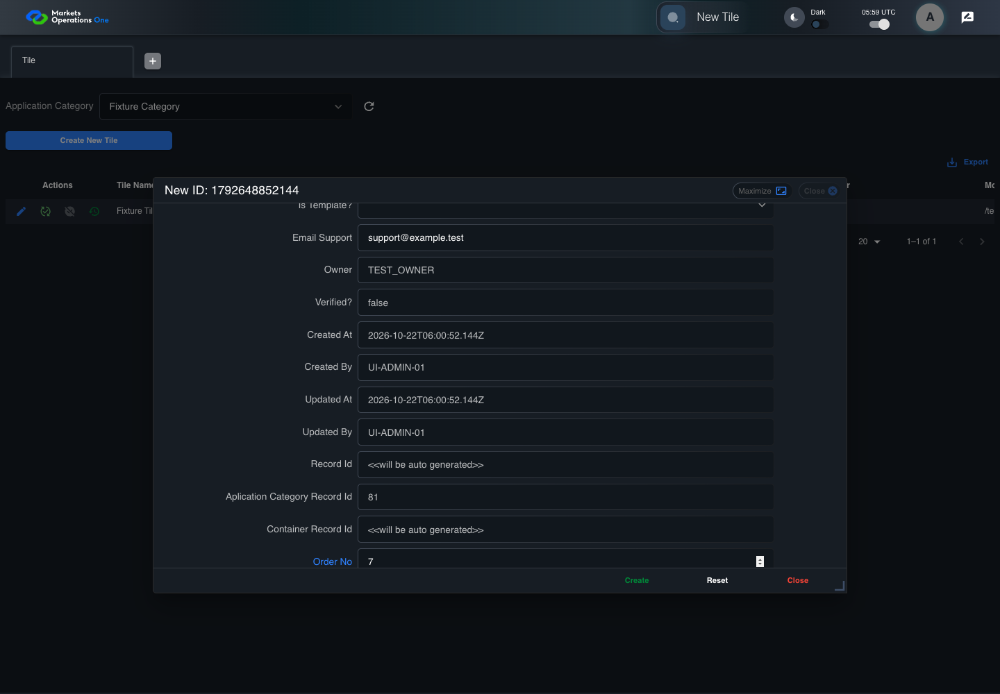
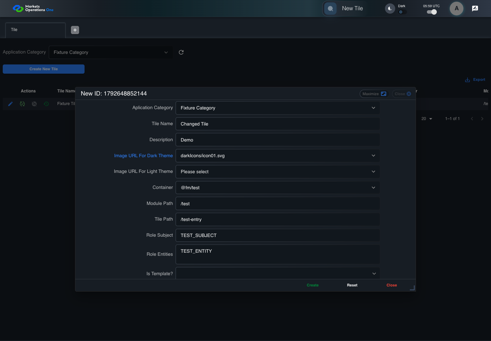
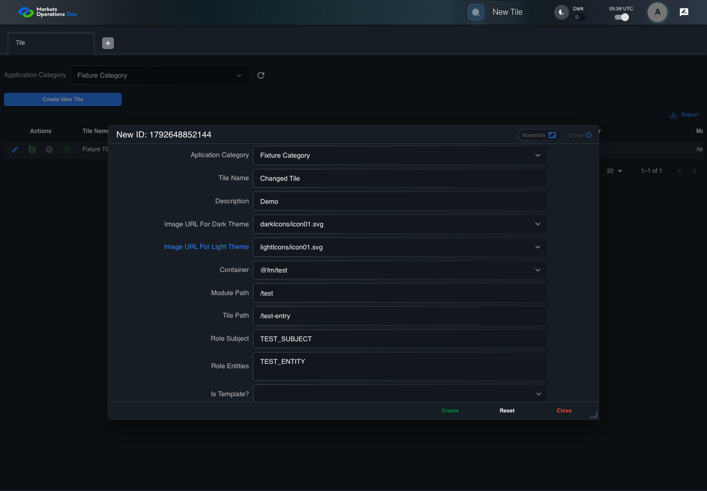
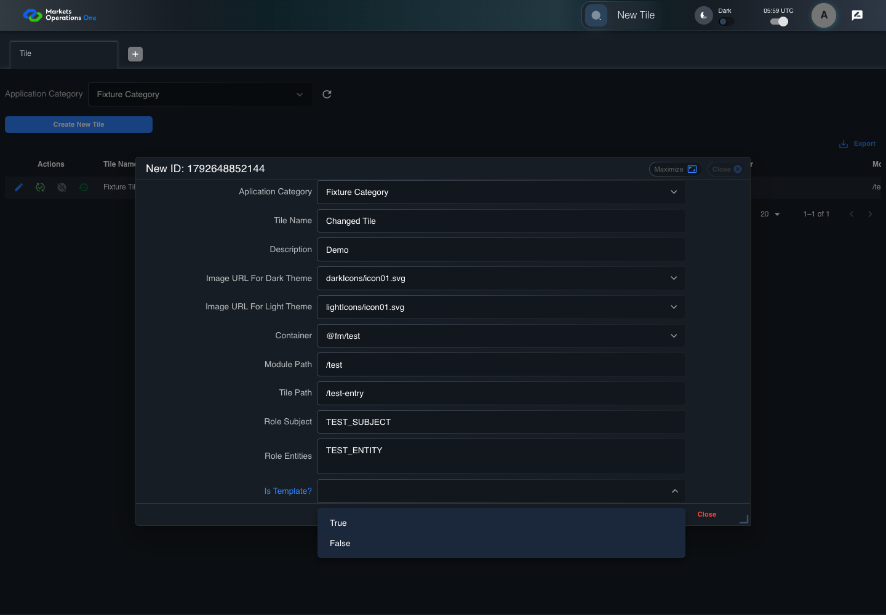
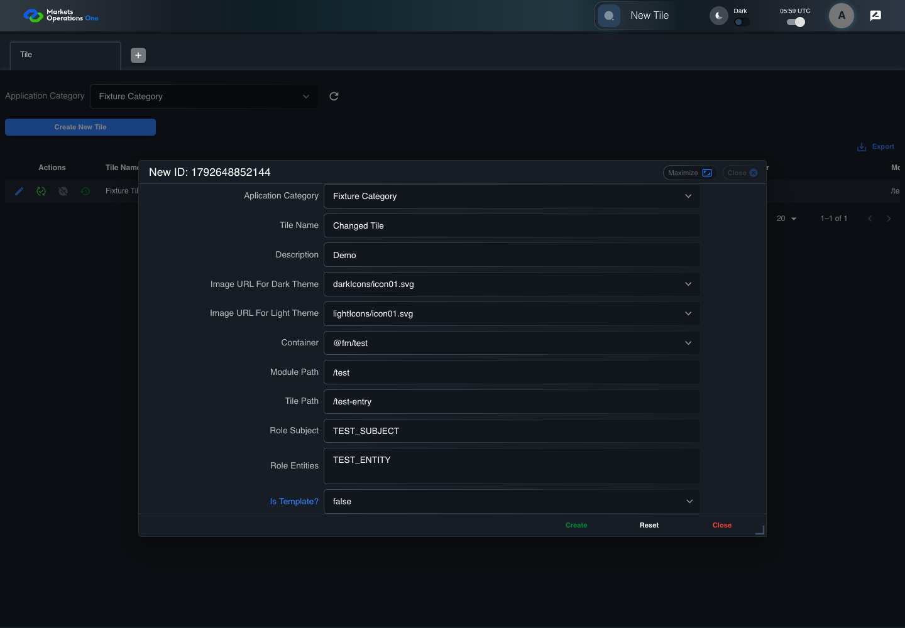

UI-ADM-TIL-003 actual administration UI with step evidence
PASS · application/run-050/ui-adm-til-003-actual-administration-ui-with-step-evidence-4f755f7e731c-attempt-1 · ACTUAL_APPLICATION_LOCAL_SERVICES
Actual current React administration screens. Controlled browser login supplies UI-ADMIN-01 and TEST_OWNER, or the declared SUPER_USER. Controlled BFF routes return the case-declared records. Other controlled saves persist submitted field values. This run establishes frontend handling only. It does not execute BFF validation, storage, audit generation, or authorization.
2026-10-22T05:59:48.852Z to 2026-10-22T06:00:00.715Z
Assertions and result · Artifact manifest · Exact run inputs and source hashes
Result SHA-256:982f4ab6338c573cdcbbb2a021f10394fd0f241db028c1ac2aa318c9e4b9606eMachine observations
- new-record-source-identity.json
7f2fa10b2aaf74ad2f4f20c88831c62653dc3699aed2fdaae2acb42c349ca2fe - source-resolved-template-selector.json
b862cc61e45f19680e10dc540155e76b93724fc1c2e8947520beed18ad536d45 - ui-origin-admin-requests.json
e5f10cd71d3c64882199ec934f14ef7f849b5beb16f4a117a3ea890883b65127
Screenshot capture: CAPTURED. Named frames: 26.
Step screenshot evidence: COMPLETE. 25/25 canonical steps have execution screenshots.
Canonical step timeline
Given Admin A is authenticated as fixture UI-ADMIN-01 with the case-specific permissions
Execution: PASSED.
1. step-01 Visible state after step 1: Given Admin A is authenticated as fixture UI-ADMIN-01 with the case-specific permissions
2026-10-22T05:59:50.746Z · 1440×1000
Step: /Users/lushevol/code/github/ratan-release-impact/workbench/tasks/ui-test-coverage-20261022/test-cases.md:8683
SHA-256:f9a6f2cf7e83886ad746206b1b6d5e5ed47cd30f72b95c8a67ed580d6facacd2And the Tile admin screen is open for UI-ADMIN-01; fixture record 101 is inactive and has Tile Name Fixture Tile; its owner is TEST_OWNER; Application Category Fixture Category is selected; the create response is a record with applicationTileId 102 and Tile Name Changed Tile
Execution: PASSED.
2. step-02 Visible state after step 2: And the Tile admin screen is open for UI-ADMIN-01; fixture record 101 is inactive and has Tile Name Fixture Tile; its owner is TEST_OWNER; Application Category Fixture Category is selected; the create response is a record with applicationTileId 102 and Tile Name Changed Tile
2026-10-22T05:59:52.233Z · 1440×1000
Step: /Users/lushevol/code/github/ratan-release-impact/workbench/tasks/ui-test-coverage-20261022/test-cases.md:8684
SHA-256:6caf4b878c70037ebcfe26b5b7d05b8934549804f2b2be83a9e833bfc3faaa65When Admin A clicks button named "Create New Tile" inside the "Tile" administration tabpanel
Execution: PASSED.3. step-03 Visible state after step 3: When Admin A clicks button named "Create New Tile" inside the "Tile" administration tabpanel
2026-10-22T05:59:52.747Z · 1440×1000
Step: /Users/lushevol/code/github/ratan-release-impact/workbench/tasks/ui-test-coverage-20261022/test-cases.md:8685
SHA-256:22660ca2e3c083022878e2a0669ca8249479ce2a53a40dd65609bed5abd13255And Admin A enters "Changed Tile" into textbox named "Tile Name" inside the new-record dialog inside the "Tile" administration tabpanel
Execution: PASSED.4. step-04 Visible state after step 4: And Admin A enters "Changed Tile" into textbox named "Tile Name" inside the new-record dialog inside the "Tile" administration tabpanel
2026-10-22T05:59:52.861Z · 1440×1000
Step: /Users/lushevol/code/github/ratan-release-impact/workbench/tasks/ui-test-coverage-20261022/test-cases.md:8686
SHA-256:89a3ab2c2dd5d146fa014017a1e15ea98ab427a2bce10e37bc8f46c5f5494894And Admin A enters "Demo" into textbox named "Description" inside the new-record dialog inside the "Tile" administration tabpanel
Execution: PASSED.5. step-05 Visible state after step 5: And Admin A enters "Demo" into textbox named "Description" inside the new-record dialog inside the "Tile" administration tabpanel
2026-10-22T05:59:52.974Z · 1440×1000
Step: /Users/lushevol/code/github/ratan-release-impact/workbench/tasks/ui-test-coverage-20261022/test-cases.md:8687
SHA-256:cbbfc23b2beaae62af6d67184b7134b7bed56d1b8406045c2d73d17552d196ebAnd Admin A enters "/test" into textbox named "Module Path" inside the new-record dialog inside the "Tile" administration tabpanel
Execution: PASSED.6. step-06 Visible state after step 6: And Admin A enters "/test" into textbox named "Module Path" inside the new-record dialog inside the "Tile" administration tabpanel
2026-10-22T05:59:53.096Z · 1440×1000
Step: /Users/lushevol/code/github/ratan-release-impact/workbench/tasks/ui-test-coverage-20261022/test-cases.md:8688
SHA-256:48c7632e51102c48df68a0011d22dd2851b464b676c3ea39ab49fecb10cdf6a6And Admin A enters "/test-entry" into textbox named "Tile Path" inside the new-record dialog inside the "Tile" administration tabpanel
Execution: PASSED.7. step-07 Visible state after step 7: And Admin A enters "/test-entry" into textbox named "Tile Path" inside the new-record dialog inside the "Tile" administration tabpanel
2026-10-22T05:59:53.290Z · 1440×1000
Step: /Users/lushevol/code/github/ratan-release-impact/workbench/tasks/ui-test-coverage-20261022/test-cases.md:8689
SHA-256:0d636c2dcee88284a34c19041d79388f1d4770e5c7840b051487f90bcda0d2f3And Admin A enters "TEST_SUBJECT" into textbox named "Role Subject" inside the new-record dialog inside the "Tile" administration tabpanel
Execution: PASSED.8. step-08 Visible state after step 8: And Admin A enters "TEST_SUBJECT" into textbox named "Role Subject" inside the new-record dialog inside the "Tile" administration tabpanel
2026-10-22T05:59:53.405Z · 1440×1000
Step: /Users/lushevol/code/github/ratan-release-impact/workbench/tasks/ui-test-coverage-20261022/test-cases.md:8690
SHA-256:318b4d8b7dee5effe7adb0e4786ae17a293ae032c88b49bfeb58b1c10fbe499eAnd Admin A enters "TEST_ENTITY" into textarea named "Role Entities" inside the new-record dialog inside the "Tile" administration tabpanel
Execution: PASSED.9. step-09 Visible state after step 9: And Admin A enters "TEST_ENTITY" into textarea named "Role Entities" inside the new-record dialog inside the "Tile" administration tabpanel
2026-10-22T05:59:53.501Z · 1440×1000
Step: /Users/lushevol/code/github/ratan-release-impact/workbench/tasks/ui-test-coverage-20261022/test-cases.md:8691
SHA-256:44b28f367b65a774d599d73e2ad6f0e2e37c6912a540732706ff88440f04b5f6And Admin A enters "support@example.test" into textbox named "Email Support" inside the new-record dialog inside the "Tile" administration tabpanel
Execution: PASSED.10. step-10 Visible state after step 10: And Admin A enters "support@example.test" into textbox named "Email Support" inside the new-record dialog inside the "Tile" administration tabpanel
2026-10-22T05:59:53.615Z · 1440×1000
Step: /Users/lushevol/code/github/ratan-release-impact/workbench/tasks/ui-test-coverage-20261022/test-cases.md:8692
SHA-256:1c43cd6965a585d3f5c6fd5df8b7c79922fb10778b4fa41fed75619477be2d34And Admin A enters "7" into spinbutton named "Order No" inside the new-record dialog inside the "Tile" administration tabpanel
Execution: PASSED.
11. step-11 Visible state after step 11: And Admin A enters "7" into spinbutton named "Order No" inside the new-record dialog inside the "Tile" administration tabpanel
2026-10-22T05:59:53.756Z · 1440×1000
Step: /Users/lushevol/code/github/ratan-release-impact/workbench/tasks/ui-test-coverage-20261022/test-cases.md:8693
SHA-256:1d0c0bc7778cf123198979b5d5d8324088b3345036661f25badeb5657d49bbdbAnd Admin A enters "Global" into textbox named "Entry Name" inside the new-record dialog inside the "Tile" administration tabpanel
Execution: PASSED.12. step-12 Visible state after step 12: And Admin A enters "Global" into textbox named "Entry Name" inside the new-record dialog inside the "Tile" administration tabpanel
2026-10-22T05:59:53.848Z · 1440×1000
Step: /Users/lushevol/code/github/ratan-release-impact/workbench/tasks/ui-test-coverage-20261022/test-cases.md:8694
SHA-256:f03caeba01d20011fb6829a3e11ecbc4e1c3b79e52b27bff4cd854a2be2db75aAnd Admin A opens combobox named "Container" inside the new-record dialog inside the "Tile" administration tabpanel
Execution: PASSED.13. step-13 Visible state after step 13: And Admin A opens combobox named "Container" inside the new-record dialog inside the "Tile" administration tabpanel
2026-10-22T05:59:53.984Z · 1440×1000
Step: /Users/lushevol/code/github/ratan-release-impact/workbench/tasks/ui-test-coverage-20261022/test-cases.md:8695
SHA-256:eefb54129d14b5a87c26a1653803ed3b6dfb95a23ff6bc4743c7619bdec6830bAnd Admin A clicks option named "@fm/test" inside the popup for the "Container" combobox in the new Tile dialog
Execution: PASSED.14. step-14 Visible state after step 14: And Admin A clicks option named "@fm/test" inside the popup for the "Container" combobox in the new Tile dialog
2026-10-22T05:59:54.127Z · 1440×1000
Step: /Users/lushevol/code/github/ratan-release-impact/workbench/tasks/ui-test-coverage-20261022/test-cases.md:8696
SHA-256:db27234f66ca84a05091ba6c5186573a2b5b8c7369d807ae090fd5948aa6cf0fAnd Admin A opens combobox named "Image URL for Dark Theme" inside the new-record dialog inside the "Tile" administration tabpanel
Execution: PASSED.15. step-15 Visible state after step 15: And Admin A opens combobox named "Image URL for Dark Theme" inside the new-record dialog inside the "Tile" administration tabpanel
2026-10-22T05:59:55.835Z · 1440×1000
Step: /Users/lushevol/code/github/ratan-release-impact/workbench/tasks/ui-test-coverage-20261022/test-cases.md:8697
SHA-256:0dfdb40894f5ef98d393b7c4656e424c5daaae99643cb04c050c365177685bebAnd Admin A clicks option named "darkIcons/icon01.svg" inside the popup for the "Image URL for Dark Theme" combobox in the new Tile dialog
Execution: PASSED.
16. step-16 Visible state after step 16: And Admin A clicks option named "darkIcons/icon01.svg" inside the popup for the "Image URL for Dark Theme" combobox in the new Tile dialog
2026-10-22T05:59:55.996Z · 1440×1000
Step: /Users/lushevol/code/github/ratan-release-impact/workbench/tasks/ui-test-coverage-20261022/test-cases.md:8698
SHA-256:14b68adbdabecd9ed543f7b6fea712132645e3cec4649f65d05ce98f6609cf42And Admin A opens combobox named "Image URL for Light Theme" inside the new-record dialog inside the "Tile" administration tabpanel
Execution: PASSED.17. step-17 Visible state after step 17: And Admin A opens combobox named "Image URL for Light Theme" inside the new-record dialog inside the "Tile" administration tabpanel
2026-10-22T05:59:56.276Z · 1440×1000
Step: /Users/lushevol/code/github/ratan-release-impact/workbench/tasks/ui-test-coverage-20261022/test-cases.md:8699
SHA-256:0f25375f280358291e1870d191636b95faf35815bbed789439792a0f556cb244And Admin A clicks option named "lightIcons/icon01.svg" inside the popup for the "Image URL for Light Theme" combobox in the new Tile dialog
Execution: PASSED.
18. step-18 Visible state after step 18: And Admin A clicks option named "lightIcons/icon01.svg" inside the popup for the "Image URL for Light Theme" combobox in the new Tile dialog
2026-10-22T05:59:56.397Z · 1440×1000
Step: /Users/lushevol/code/github/ratan-release-impact/workbench/tasks/ui-test-coverage-20261022/test-cases.md:8700
SHA-256:4dd5c7b59a630a21f0bb488be5cd5e966b02c7ed6a9c206430e275b941cefe8fAnd Admin A opens combobox named "Is Template?" inside the new-record dialog inside the "Tile" administration tabpanel
Execution: PASSED.
19. step-19 Visible state after step 19: And Admin A opens combobox named "Is Template?" inside the new-record dialog inside the "Tile" administration tabpanel
2026-10-22T05:59:56.516Z · 1440×1000
Step: /Users/lushevol/code/github/ratan-release-impact/workbench/tasks/ui-test-coverage-20261022/test-cases.md:8701
SHA-256:f6c741d6e7532499a5d59e6fa3c640d49a2ff26cda1571893c7649441d6030daAnd Admin A clicks option named "false" inside the popup for the "Is Template?" combobox in the new Tile dialog
Execution: PASSED.20. step-20 Visible state after step 20: And Admin A clicks option named "false" inside the popup for the "Is Template?" combobox in the new Tile dialog
2026-10-22T05:59:56.648Z · 1440×1000
Step: /Users/lushevol/code/github/ratan-release-impact/workbench/tasks/ui-test-coverage-20261022/test-cases.md:8702
SHA-256:953083a7a5992bb1246298364745dfcd422dcb01eebb06a68e6a464a4ee2dbb1And the declared controlled field clock advances by 300 milliseconds
Execution: PASSED.
21. step-21 Visible state after step 21: And the declared controlled field clock advances by 300 milliseconds
2026-10-22T05:59:58.133Z · 1440×1000
Step: /Users/lushevol/code/github/ratan-release-impact/workbench/tasks/ui-test-coverage-20261022/test-cases.md:8703
SHA-256:be7d14378caecca5fcb5bd54d0b4d7c0e4cc2706f59ded6580bf047f0f813ee0And Admin A clicks button named "Create" inside the new-record dialog inside the "Tile" administration tabpanel
Execution: PASSED.22. step-22 Visible state after step 22: And Admin A clicks button named "Create" inside the new-record dialog inside the "Tile" administration tabpanel
2026-10-22T05:59:58.397Z · 1440×1000
Step: /Users/lushevol/code/github/ratan-release-impact/workbench/tasks/ui-test-coverage-20261022/test-cases.md:8704
SHA-256:3c1439d3a1783f4ec02fdc8a60acfc6d8dde2b45efb5f4de72233a7aa68b2582Then exactly one row with Record Id "102" exists in data grid with source identity "administration records" inside the "Tile" administration tabpanel
Execution: PASSED.23. step-23 Visible state after step 23: Then exactly one row with Record Id "102" exists in data grid with source identity "administration records" inside the "Tile" administration tabpanel
2026-10-22T05:59:58.481Z · 1440×1000
Step: /Users/lushevol/code/github/ratan-release-impact/workbench/tasks/ui-test-coverage-20261022/test-cases.md:8705
SHA-256:228e6c623574e7a5196d8c242007d4b4890ad19b4c30a58307e8c42b31ff0392And cell named "Tile Name" inside row with Record Id "102" in the "Tile" administration data grid displays "Changed Tile"
Execution: PASSED.24. step-24 Visible state after step 24: And cell named "Tile Name" inside row with Record Id "102" in the "Tile" administration data grid displays "Changed Tile"
2026-10-22T05:59:58.665Z · 1440×1000
Step: /Users/lushevol/code/github/ratan-release-impact/workbench/tasks/ui-test-coverage-20261022/test-cases.md:8706
SHA-256:e3758378aeace5349e0d097420c60f550f325286b8d79c6b2cf523d771c8303cAnd dialog with source identity "new ID: <captured fixture timestamp>" inside the "Tile" administration tabpanel is absent
Execution: PASSED.25. step-25 Visible state after step 25: And dialog with source identity "new ID: <captured fixture timestamp>" inside the "Tile" administration tabpanel is absent
2026-10-22T05:59:58.803Z · 1440×1000
Step: /Users/lushevol/code/github/ratan-release-impact/workbench/tasks/ui-test-coverage-20261022/test-cases.md:8707
SHA-256:4611b13eec48b453d4a63249b90ea858dc5f4bbbf4262947fd74850b79c87c2a
Additional named frames
The final visible state after the named test assertions.
2026-10-22T05:59:58.933Z · 1440×1000Step: Test source: /Users/lushevol/code/github/ratan-release-impact/workbench/e2e/audit-specs/admin-expanded.spec.ts:15
SHA-256:
62b36cf1acb53477e97bff4f5974ec0e746f07bd6061c1284cc60c249d584690Screenshots establish visible state only. Assertions and traces support functional claims.